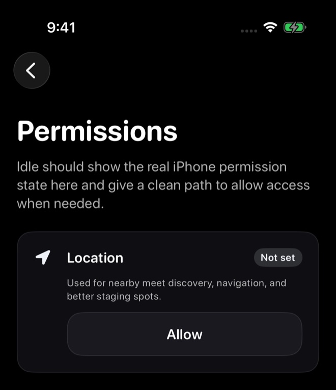
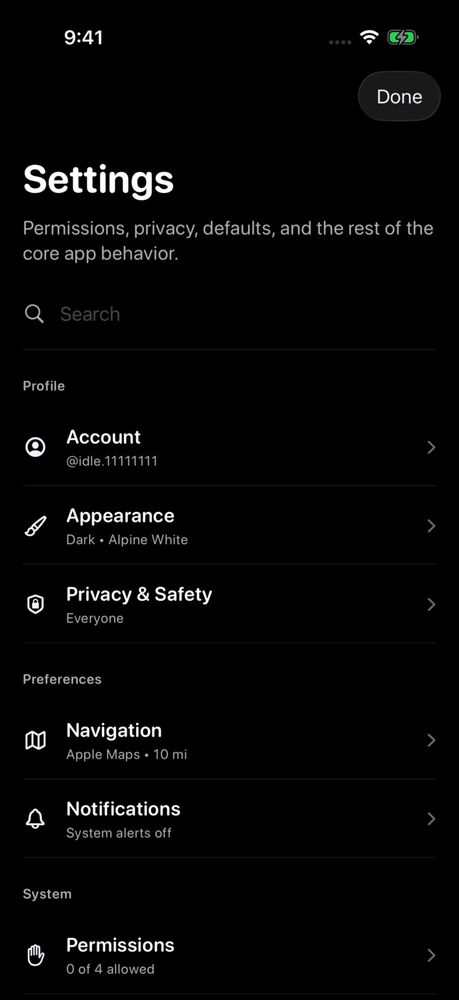

These screenshots use sample content in a preview version of Idle. Your app may look different. Select an image to see the full screen.
Turn on location access
If location is off, Idle may not be able to show nearby meets on Home or in Discover.
- Open the iPhone Settings app.
- On recent iOS versions, open Apps, then tap Idle.
- Tap Location if it is listed.
- Choose While Using the App.
- For more accurate distances, turn on Precise Location if it is available.
- Reopen Idle.
If Location is missing from iPhone Settings, open Idle, tap your avatar on Home, then go to Settings > Permissions. If Location shows Not set, tap Allow and follow the iPhone prompt. If you still cannot review location access, contact support.
Location should stay enabled
After you choose While Using the App, iPhone should keep that permission enabled. You usually only need to change it again if you turn it off later, reinstall Idle, or iOS asks you to confirm permissions again.


Check the nearby radius separately from location
From Home, open your avatar sidebar, then Settings → Navigation. Under Nearby radius, choose a distance and return to Settings to check the Navigation summary.
Choose the distance you want under Nearby radius. You can check the saved distance beneath Navigation in Settings. A radius setting does not turn on location access, so review both.


Refresh the Home feed
After changing location permission, reopen Idle before refreshing the meet list.
- Open Idle.
- Go to Home and select Meets.
- Pull down from the top of the meet feed until the refresh indicator appears.
- Release and wait for the meet feed to finish refreshing.
Other reasons Home may look empty
- Permission prompt dismissedIdle may suggest reviewing permissions when location or notifications are off. You can choose whether to enable them, then refresh Home.
- No active nearby meetsThere may not be a public meet near you right now.
- Private or group meetsGroup-only meets need group or meet access. Invite-only meets do not appear in nearby discovery.
- Connection issuesTry switching between Wi-Fi and cellular, then refresh Home again.
- Outdated app versionCheck the Updates page for the current public release, update Idle from the App Store, then compare it with Idle > Settings > About Idle.
Still not seeing meets?
Email support@idlemeets.com with your city, whether location is enabled, your iPhone model, iOS version, and a screenshot of Home if possible.